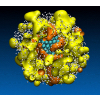

Molecular Simulation of NonEquilibrium Processes
The MSNEP Group
Molecular Simulation of NonEquilibrium Processes
Our research is in the field of molecular modeling and simulation. More specifically, we are interested in developing and using molecular simulation methods, such as Monte Carlo methods, equilibrium and nonequilibrium molecular dynamics simulations, ab initio calculations, to analyze and understand the microscopic mechanisms underlying various nonequilibrium processes. Our recent research focuses on understanding and controlling polymorphism during crystallization. This is one of the long-standing challenges in solid-state chemistry. Polymorphism denotes the ability of a molecule to crystallize in more than one structure or packing arrangement. This phenomenon has broad practical implications for a number of industries, ranging from pharmaceuticals (drugs) to textiles (dyes and pigments) or defense (energetic materials). More generally, we develop an understanding of self-assembly on the nanoscale (studying the formation of metal and semiconductor nanoparticles or of systems of biological interest) and of transport on the nanoscale (studying the conductivity and viscosity of liquids confined in nanopores).
Energy-Efficient Self-Organization and Swarm Behavior in Active Matter

Living systems have the unique ability to form hierarchical assemblies, in which individual constituents can perform tasks cooperatively and emergently. For instance, in Nature, birds may fly in flocks and develop emergent behaviors that result in complex motions and interactions. Similarly, bacteria are active particles that can form assemblies such as bacterial biofilms that are known to play a major role in certain forms of cancer. Harnessing such properties is a long-standing challenge for the rational design of dynamic materials, that can respond to their environment, communicate with one another, and undergo a rapid, reversible, assembly through the transduction of energy. Recent developments in the design of smart and active colloidal building blocks have led to tremendous breakthroughs, with, for instance, the onset of synthetic photoactivated active assemblies known as “living crystals” that can form, break, explode and re-form elsewhere. The goal of this proposal is to develop a combined experimental, computational, and theoretical framework to shed light on the physical underpinnings of such assembly processes and program the assembly of smart active materials. Our recent work on equilibrium systems has shown that entropy is an efficient collective variable to measure how organized, or disorganized, a system can be. It also provides a great deal of information on the amount of energy that can flow into or out a given system. This approach can be readily extended to active assemblies, by applying, for instance, pattern recognition algorithms and machine learning methods. We also showed that nonequilibrium entropies can be calculated using compression algorithms. This method provides a nonequilibrium alternative to the Shannon entropy and is closely related to the algorithmic approach to information, known as Kolmogorov complexity. Our recent results provide a route to create colloidal building blocks with reconfigurable shapes and tailored functionalities. Indeed, chemical- and light-stimulated dewetting mechanisms can be used to synthesize particles that can swim and sense each other from self and cooperative phoresis, giving rise to “living crystals” and “rotors”. A novel aspect of our proposal will be the design of different active particles that act like controllable micron scale “robots”, not individually controllable but controllable collectively with lights and magnetic fields to form Turing patterns, swarm around objects they sense chemically, phoretically or magnetically or swarm into reconfigurable shapes. Our proposal relies on a closed loop approach that builds on our combined expertise and involves (i) the design of new colloidal building blocks that are shape-changing, reconfigurable, and light-activated dual-engine particles, whose state can be dynamically switched between swimming, spinning or inactive, (ii) the identification of the features of the assembly process through nonequilibrium particle-based computer simulations, specifically nonequilibrium Brownian dynamics, as well as simulations methods that couple the active colloidal building blocks to a Lattice-Boltzmann approach for the solvent and, in turn, account for hydrodynamics, (iii) deciphering the intelligence-information link by subjecting both experimental and simulation data on the formation of novel active assemblies to a Kolmogorov analog of the Turing test, and (iv) the use of machine (reinforcement) learning to control the assembly of active colloidal materials with the desired properties. Findings from this research will have wide-ranging implications for biomaterials, by providing new insights into active biological assembly, and in micro-robotics, by identifying novel strategies to design smart active materials.
This research is funded by the DOE through DE-SC0020976. Collaborators: Paul Chaikin (NYU), Stefano Sacanna (NYU) and Mark Tuckerman (NYU).
Topology, Rare-event Simulation, and Machine Learning as Routes to Predicting Molecular Crystal Structures and Understanding Their Phase Behaviour

Mark Tuckerman of New York University and Jerome Delhommelle of the University of North Dakota are supported by an award from the Chemical Theory, Models and Computational Methods program in the Division of Chemistry to develop computational methods and software to study molecular crystals. Ordered arrays of molecules forming structures known as molecular crystals play an essential role in the pharmaceutical, agrochemical, electronics, and defense industries. In many instances, a given chemical compound may have more than one crystal structure, a phenomenon known as polymorphism. A crystal may also contain impurities, the most important among these being water. Such structures are referred to as crystal hydrates. The ability of these materials to function in a desired manner may depend on which structure, pure or impure, they form. If a well-engineered molecular crystal converts to another form or if it absorbs impurities over time., its performance may be seriously degraded. Such transformations can, for example, cause drugs to fail or insecticides to lose their potency. On the other hand, polymorphism and hydrate formation in molecular crystals are features that can be exploited to enhance the performance of these material. Utilizing advances in high-performance computing and artificial intelligence, the theoretical molecular sciences are currently poised to drive new directions in molecular crystal engineering. Computational approaches have the potential to highlight potential pitfalls associated with structural and compositional variability before expensive experiments are performed or large investments in manufacturing a particular material are made. With the aim of realizing this potential, Professors Tuckerman and Delhommelle propose to create new computational approaches and software components for rapidly predicting polymorphic structures in molecular crystals and understanding the transitions between structures. Broad dissemination of these tools and their incorporation into the materials design and engineering processes will affect a reduction in time between concept and realization of crystal systems with desired optimal properties and will catalyze the creation of new course materials for enhancing STEM education. The basic properties of organic molecular materials in the solid state are often strongly influenced by the details of their crystal structures and the existence of polymorphs and/or impurities such as water. Experimental determination of these structures is costly and time-consuming, which places increased importance on the role of theory and computation and the leveraging of advances in high-performance computing machine learning methods. The aim of this project is to develop a suite of new methods and software tools for the prediction of organic molecular crystal structures, including multiple polymorphs, elucidation of the mechanisms and thermodynamics of polymorphic and solid-liquid phase transitions, and the mapping of favored locations for water molecules in stoichiometric and non-stoichiometric crystal hydrates. The proposed developments bring together techniques of topological analysis, machine learning, enhanced molecular dynamics, thermodynamics, and solvation theories. The main goals of the project are (1) to create a topological theory for crystal structure generation based on solely on molecular order parameters, thus bypassing the need to parameterize an intermolecular interaction model, (2) to develop new entropy- and path-based collective variables, aided by machine learning , for studying polymorphic transitions via state-of-the-art enhanced sampling techniques, and (3) to devise new theoretical and computational techniques for mapping the locations of water molecules in non-stoichiometric crystal hydrates. Broad dissemination of these tools and methods and their incorporation into crystal engineering pipelines could indicate fruitful directions in materials design, thus effecting a reduction in time between concept and realization of systems with desired properties and lead to the creation of new learning modules for graduate level courses in topics such as statistical mechanics, science of materials, and machine learning in the molecular sciences. This award reflects NSF's statutory mission and has been deemed worthy of support through evaluation using the Foundation's intellectual merit and broader impacts review criteria.
This research is funded by the NSF through CHE-1955403. Collaborator: Mark Tuckerman (NYU).
Unraveling the interplay between thermodynamics and kinetics during the nucleation and growth of semiconductor, metal and molecular nanoparticles.

Because of their size, intermediate between the dimensions of atoms and of bulk matter, nanoscale materials often exhibit very unique properties. One needs, however, to be able to control the properties of nanomaterials, such as e.g. their crystalline structure, to fully harness the powerful properties of these materials. While physicists and synthetic chemists have developed many successful strategies to this end, a complete understanding of the molecular mechanisms underlying the formation of nanomaterials has remained elusive so far. The aim of our work is two-fold. Our first goal is to elucidate these mechanisms. For this purpose, we use simulation methods appropriate for the sampling of rare events (umbrella sampling, transition path sampling methods) to simulate the crystal nucleation process. Once the critical nucleus is obtained, we simulate its growth using conventional molecular dynamics simulations. Throughout nucleation and growth, using, and developing, when necessary, appropriate order parameters, we identify how and when the selection of a specific crystalline structure (or polymorph) takes place.
This research was funded by NSF CAREER Award through DMR-1052808. Collaborator: Lian Yu (UW-Madison), Bruce Garetz (NYU-Poly).
Rheology of liquid metals: equilibrium and transient-time correlation function nonequilibrium molecular dynamics simulations.
The knowledge of the transport properties are essential to understand the behavior of liquids and supercooled liquids. These properties are important in a wide range of applications, from biological systems to materials processing. Nonequilibrium molecular dynamics (NEMD) simulations provides a direct access to the microscopic structural changes induced by the applied shear rate. It is therefore a valuable tool to understand how the structure and in turn the transport properties of liquids are affected by shear. However, conventional NEMD methods only allow one to study systems subjected to very large shear rates, several orders of magnitude larger than the experimentally accessible rates. These methods only provide insight into the non-Newtonian behavior of liquids. We develop new simulation methods, based on the transient-time correlation function formalism, to shed light on these properties at experimentally accessible shear rates both for bulk and nanoconfined systems.
This research was funded by ACS PRF through DMR-1052808, ExxonMobil
Adsorption and storage of environmental pollutants in carbon nanotubes and porous materials.
We use molecular simulations to shed light on the adsorption and storage of environmental pollutants in carbon nanotubes and nanoporous materials such as metal-organic frameworks. The two key features of our research are the new force field, developed to model the differnet environmental pollutants (CO2, PCBs, PAHs,...), and the new simulation methods, developed to assess the thermodynamic properties of these pollutants in the bulk as well as for confined fluids. Specific objectives include: (i) the development of a force field leading to accurate predictions of the vapor pressure and partition coefficients (ii) the generation of a database for the thermophysical properties of these pollutants to complement the few available experimental data, (iii) the thermodynamic analysis of the adsorption process from the air and from aqueous solutions. The findings, resulting from the proposed research, will suggest how to improve the capture of organic pollutants and could be potentially transformative in addressing the needs of the community for a cleaner environment.
This research was funded by NSF EPSCoR
Cancer .
Cancer
This research was funded by NSF EPSCoR.